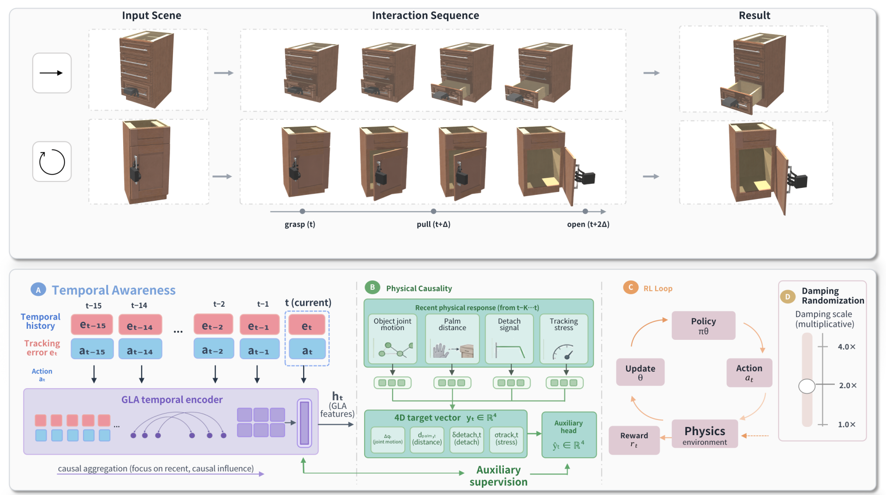

Dexterous interaction with articulated objects is important for household, assistive, and humanoid manipulation, where multi-finger hands can provide compliant contact patterns beyond parallel-jaw grasping. However, articulated-object manipulation differs from static-object manipulation: the target part cannot be directly actuated, and its motion must emerge through sustained physical hand--handle contact. This makes the transition from object-centric articulated generation to hand-driven dexterous hand--object interaction non-trivial, since geometric trajectory replay or open-loop execution does not model the contact dynamics required to move the articulated part. Moreover, policies trained only for task completion under fixed dynamics can overfit nominal contact loads, especially without tactile or force feedback, and may degrade when the contact load changes. To address these challenges, we present DragMesh-2, a contact-driven framework for dexterous interaction with articulated objects that extends articulated interaction from object-centric generation to hand-driven dexterous hand--object interaction, where articulated motion must arise through physical contact. We further propose PICA, a physically informed contact-aware training mechanism that injects physical signals into policy learning without tactile or force feedback, improving robustness and task success under changing contact loads. Finally, we conduct systematic evaluation across multiple damping conditions and articulated-object categories to study robustness under contact-load variation, and provide a pure-geometry dexterous interaction resource to support future loco-manipulation and humanoid hand--object interaction research. Across seven GAPartNet objects, DragMesh-2 achieves stronger robustness under contact-load variation than the compared methods while maintaining high task success across damping conditions.

@inproceedings{DragMesh2,
title={DragMesh-2: Physically Plausible Dexterous Hand-Object Interaction with Articulated Objects},
author={Zhang, Tianshan and Duan, Yijia and Li, Yanjun and Zhang, Zeyu and Tang, Hao},
year={2026},
booktitle={arXiv},
}